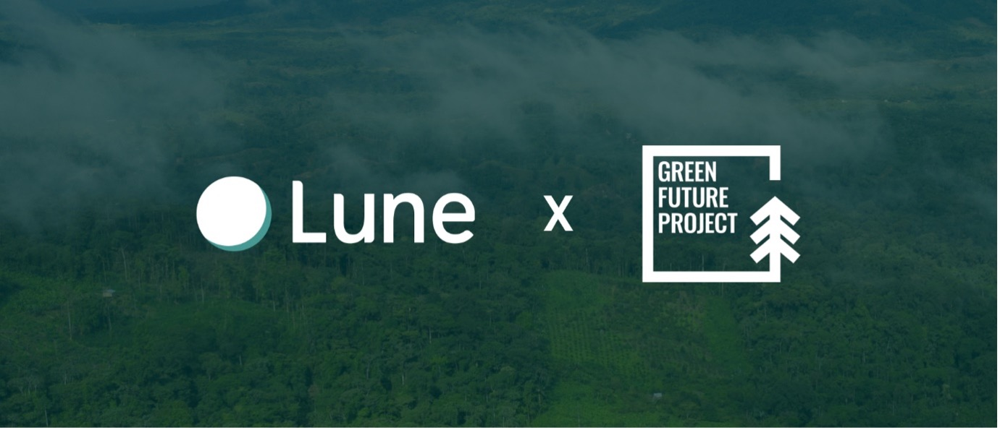
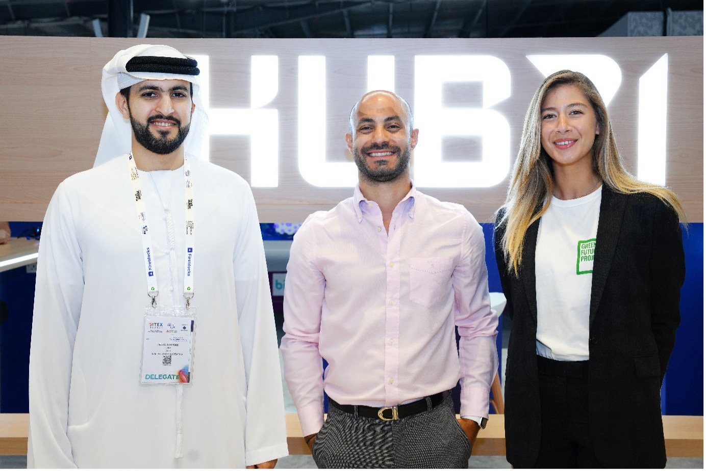
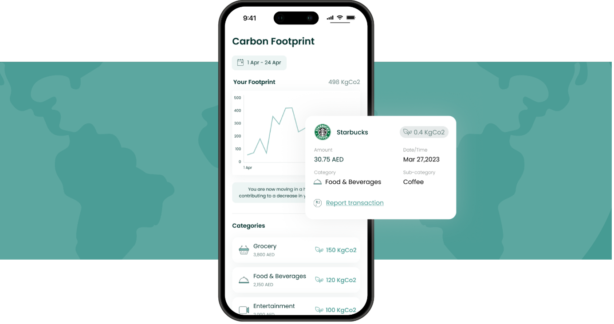
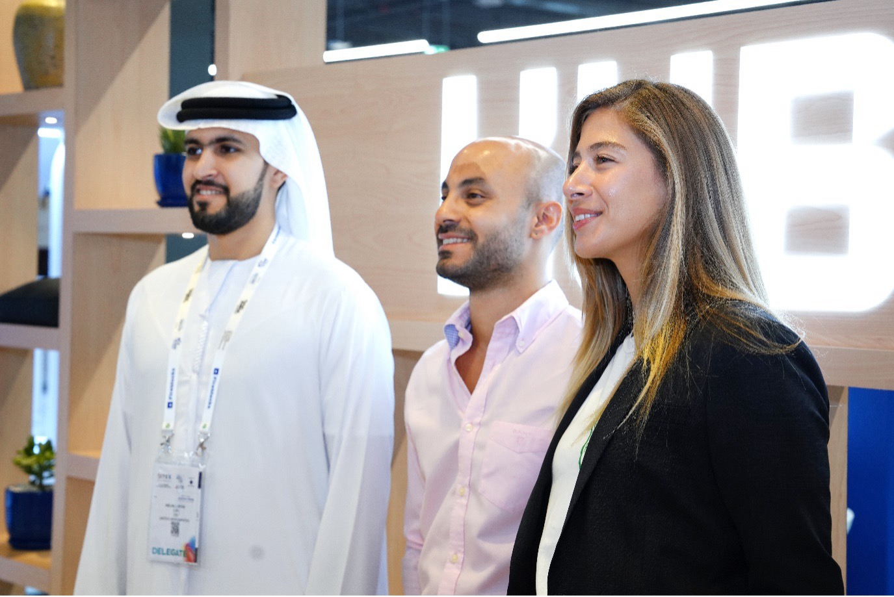

Lune and GFP Uniting for Transaction Carbon Footprint Transparency
Introducing a new era in digital banking, where your financial decisions are and also kind to the planet.
Published on

Turning Your Spending into Sustainable Action
Introducing a new era in digital banking, where your financial decisions are and also kind to the planet. Lune Technologies and Green Future Project have joined forces, blending the best of financial technology with a strong commitment to environmental sustainability. This partnership marks a significant step forward in redefining banking's role in the fight against climate change.
By integrating cutting-edge financial data science with a strong commitment to the planet, every transaction is infused with a sense of responsibility towards ourEarth. Let’s explore how this partnership is transforming the landscape of eco-conscious banking.
Digital Banking with a Greener Edge

Building from the partnership of Lune Technologies and Green Future Project, Lune's expertise in financial data enrichment takes center stage. Lune excels in transforming complex financial data into clear, actionable insights, our approach elevates the standard banking experience. This enables banks and fintech companies to offer more personalized services and gain a deeper understanding of their customers' spending habits. Lune's transaction enrichment capabilities provide a deeper understanding of each transaction, offering a narrative that goes beyond numbers. This enhanced banking efficiency aligns perfectly with the end customer's individual financial path, ensuring every decision reflects a commitment to environmental stewardship. In this new chapter of banking, our role is pivotal in making the industry smarter and more attuned to the planet's needs.
The Role of Green Future Project
As we go deeper into this synergy of financial innovation and ecological care, the role of Green FutureProject emerges as equally vital. A climate tech for environmental responsibility, Green Future Project brings to the table a mission deeply rooted in sustainability. Their commitment to creating a healthier planet complements Lune's financial ingenuity. Specializing in practical solutions to reduce carbon footprints and enhance ecological awareness, Green Future Project represents the environmental conscience in this partnership. Their expertise in monitoring, reducing, and offsetting carbon emissions is integral to empowering consumers with the knowledge and tools to make environmentally sound decisions
Benefits of the Partnership

Let's focus on the tangible benefits it brings to consumers, banks and fintech's.
For consumers, this integration translates into a deeper understanding of their environmental impact. With each purchase, they can see the carbon footprint associated with their spending, making it easier to make informed, sustainable choices.
For banks and fintech's on the other hand, it offers a unique selling point, which is the ability to provide customers with environmentally responsible banking services. It's about enabling a lifestyle that aligns with the values of a growing number of consumers who are concerned about the environment. Ultimately, financial institutions should expect greater customer loyalty and attract a demographic that values sustainability.
Hearing from the Co-founders

"This partnership aligns perfectly with Lune's vision for a more responsible future. As the global community comes together for COP28, our initiative adds a crucial layer of consumer empowerment, enabling each transaction to be a meaningful contribution toward a net-zero world."
Zain Tarawneh, Co-Founder ofGreen Future Project, added:
"Together with Lune we are leading an innovative path in the banking sector, demonstrating that sustainability is a versatile approach that can be integrated into any industry. We firmly believe that even the smallest everyday actions can lead to a significant positive impact. Through greater awareness of the emissions generated we can make consumer choices not only more conscious but also more sustainable."
Banking's Role in the COP28 Climate Agenda
As the world gears up for COP28, a summit that brings together global leaders to discuss and advance climate action, the partnership reflects the kind of innovation and commitment needed to address climate change challenges. We’re hoping to set a precedent for how technology can be utilized for environmental good. We’d like to think that this initiative goes beyond mere awareness, and instead, actively engaging consumers in the climate conversation by linking their everyday financial decisions with their carbon footprint.